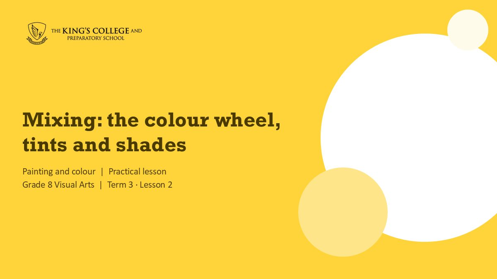

Term 3 · Lesson 2 · Practical lesson
Mixing: tints, tones and shades
Start here
Today I will
- Today I will mix tints, tones and shades of one hue
- Today I will see how adding white, grey or black changes value in colour
- Today I will paint a warm and a cool swatch and say how each feels
Think first
Look back at your value scale from Term 1. How could you make a value scale out of one colour?
Words to Know
| Word | Meaning |
|---|---|
| Tint | A hue made lighter by adding white. |
| Tone | A hue mixed with grey, which makes it softer and less bright. |
| Shade | A hue made darker by adding black. |
| Warm colours | Reds, oranges and yellows: they feel energetic and seem to come forward. |
| Cool colours | Blues, greens and violets: they feel calm and seem to move back. |
Slides

Videos
Notes
Value in colour: adding white, grey and black; warm and cool colours.
Tint, tone and shade
| What you add | What happens |
|---|---|
| White (tint) | The hue gets lighter and softer: start with white and add tiny bits of colour. |
| Grey (tone) | The hue gets duller and calmer, but keeps about the same value. |
| Black (shade) | The hue gets darker and deeper: add black a very little at a time. |
Warm and cool
- Warm: Reds, oranges and yellows: fire, the sun, energy. They seem to come forward.
- Cool: Blues, greens and violets: water, ice, shade. They seem to move back.
- In a landscape: Cool, pale colours in the distance help show depth.
- In The Starry Night: Warm yellow stars glow against the cool blue sky.
Remember
White lifts, grey softens, black deepens: a little at a time.

Pause and reflect (Genesis 1:31)
At the end of creation God saw all that he had made and it was very good. Where have you seen beautiful colour in creation this week?
Practical
You need: Acrylics (one hue, white, black, grey), brushes, palette, water pots, paper towel, card strips
Tint, tone and shade strips and two swatches
- Choose one bright hue and paint the pure colour in the middle box of each strip.
- Tint strip: add white step by step, making each box a little lighter (five steps).
- Shade strip: add black a speck at a time, making each box a little darker (five steps).
- Tone strip: add grey step by step, making each box a little duller.
- Paint one small warm swatch (reds, oranges, yellows) and one cool swatch (blues, greens, violets).
- When dry, label every strip and write one feeling word under each swatch.
Test yourself
- What is the difference between a tint and a shade?
- What does adding grey do to a colour?
- Why do cool colours help to show distance in a landscape?
Show answers
1. A tint has white added (lighter); a shade has black added (darker). 2. It makes a tone: softer and less bright. 3. Cool colours seem to move back in space, like faraway hills.
Finished early?
Richer dark challenge
Compare two ways of making a colour darker.
- Paint two small squares of the same blue on scrap card.
- Add a tiny touch of black to the first square's paint.
- Add a tiny touch of orange (its complement) to the second.
- Write which dark looks richer and why you think so.